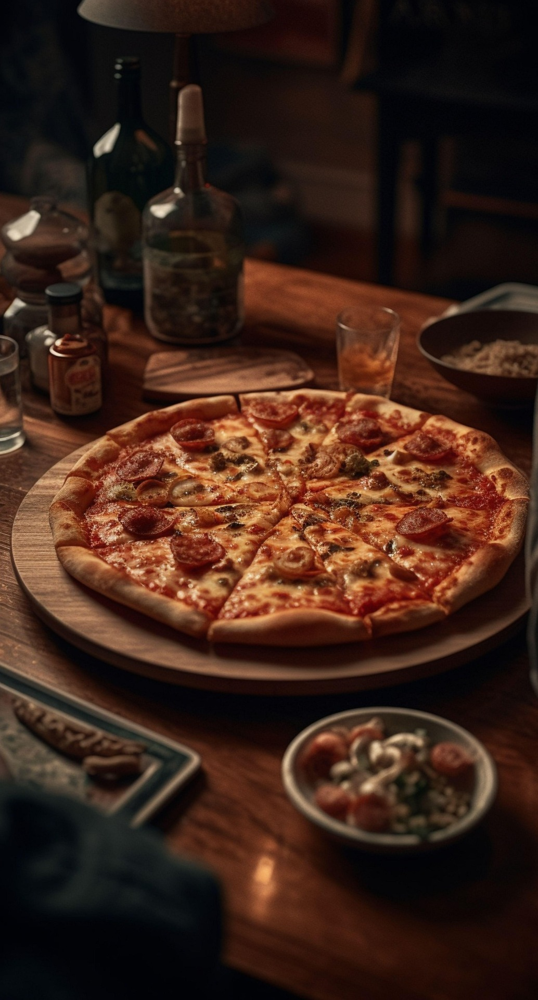

<!DOCTYPE html>
<html lang="en">
<head>
    <meta charset="UTF-8">
    <meta name="viewport" content="width=device-width, initial-scale=1.0">
    <title>Document</title>
</head>
<body>
    <!--        <li>-->
<!--          -->
<!--          <div class="flex-caption">-->
<!--            <h2 class="slider-title">L'Arte della pizza napoletana</h2>-->
<!--            <h3 class="slider-subtitle">Dalla tradizione al tuo piatto.</h3>-->
<!--            <p class="slider-description">-->
<!--              Dal cuore di Napoli, il nostro segreto è semplice: impasto a lunga-->
<!--              lievitazione, ingredienti genuini e un forno a legna rovente.-->
<!--              Un'esperienza di gusto autentica, pronta per te.-->
<!--            </p>-->
<!--          </div>-->
<!--        </li>-->

<!--        <li>-->
<!--          -->
<!--          <div class="flex-caption">-->
<!--            <h2 class="slider-title">Il lato croccante del gusto</h2>-->
<!--            <h3 class="slider-subtitle">Friggitoria, che passione!</h3>-->
<!--            <p class="slider-description">-->
<!--              Un vero antipasto napoletano non può mancare. Le nostre fritture-->
<!--              sono piccole opere d'arte: dorate, croccanti e ripiene di sapore.-->
<!--            </p>-->
<!--          </div>-->
<!--        </li>-->

<!--          <div class="flex-caption">-->
<!--            <h2 class="slider-title">Un dolce abbraccio</h2>-->
<!--            <h3 class="slider-subtitle">I nostri dolci artigianali.</h3>-->
<!--            <p class="slider-description">-->
<!--              Lasciati tentare dai nostri dessert. Fatti in casa, con amore e-->
<!--              cura, per chiudere il pasto con un tocco di dolcezza che ti farà-->
<!--              innamorare.-->
<!--            </p>-->
<!--          </div>-->


<!--          <div class="col-md-12 col-sm-12 text-justify">-->
<!--            <h3 class="text-uppercase padding-bottom-10 text-center">-->
<!--              La vera pizza e friggitoria napoletana-->
<!--            </h3>-->
<!--            <p>-->
<!--              La nostra storia nasce dalla passione per i sapori autentici di-->
<!--              Napoli. Ogni giorno prepariamo pizze che seguono la tradizione,-->
<!--              con impasto a lunga lievitazione e ingredienti selezionati. Ma non-->
<!--              è tutto: il nostro menu si arricchisce con la friggitoria,-->
<!--              un'esplosione di gusto e croccantezza.-->
<!--            </p>-->
<!--            <p>-->
<!--              Dalle frittatine di pasta alle crocchè di patate, ogni specialità-->
<!--              fritta è preparata al momento per garantirti un sapore unico e-->
<!--              indimenticabile. È l'aggiunta perfetta alla tua pizza, un viaggio-->
<!--              nei sapori più veri della nostra terra.-->
<!--            </p>-->
<!--            <p>-->
<!--              Non solo pizza, ma un'esperienza culinaria completa. Vieni a-->
<!--              scoprire l'arte della frittura napoletana!-->
<!--            </p>-->
<!--          </div>-->

<!--          <div class="col-md-12 col-sm-12 text-justify">-->
<!--            <h3 class="text-uppercase padding-bottom-10 text-center">-->
<!--              Non solo pizza: fritto e dolci!-->
<!--            </h3>-->
<!--            <p>-->
<!--              Se pensi che la nostra pizza sia la fine del mondo, aspetta di-->
<!--              assaggiare tutto il resto! Qui a Regio Parco, crediamo che-->
<!--              un'ottima pizza meriti un inizio e una fine perfetti. Ecco perché-->
<!--              abbiamo arricchito il nostro menu con l'arte della frittura e con-->
<!--              irresistibili dolci.-->
<!--            </p>-->
<!--            <p>-->
<!--              Inizia il tuo viaggio di gusto con la nostra friggitoria:-->
<!--              specialità napoletane come arancini saporiti e crocchè filanti,-->
<!--              dorate alla perfezione. E per chiudere in bellezza, non perderti i-->
<!--              nostri dolci artigianali. Dalle zeppole calde e soffici al-->
<!--              tiramisù fatto in casa, ogni dessert è la conclusione perfetta per-->
<!--              la tua serata.-->
<!--            </p>-->
<!--            <p>-->
<!--              Vieni a scoprire il lato croccante e quello più dolce del nostro-->
<!--              gusto. Ti aspettiamo!-->
<!--            </p>-->
<!--          </div>-->


 <!-- start gallery -->
<!--    <section id="gallery" class="templatemo-section templatemo-light-gray-bg">-->
<!--      <div class="container">-->
<!--        <div class="row">-->
<!--          <div class="col-md-12">-->
<!--            <h2 class="text-center text-uppercase">-->
<!--              La nostra galleria del gusto-->
<!--            </h2>-->
<!--            <hr />-->
<!--          </div>-->
<!--          <div class="col-md-4 col-sm-4">-->
<!--            <div class="gallery-wrapper">-->
<!--              
<!--                src="images/gallery-img1.jpg"-->
<!--                class="img-responsive gallery-img"-->
<!--                alt="Pizza Margherita"-->
<!--              />-->
<!--              <div class="gallery-des">-->
<!--                <h3>Margherita</h3>-->
<!--                <h5>-->
<!--                  L'eleganza della semplicità: pomodoro, mozzarella di bufala e-->
<!--                  basilico.-->
<!--                </h5>-->
<!--              </div>-->
<!--            </div>-->
<!--          </div>-->
<!--          <div class="col-md-4 col-sm-4">-->
<!--            <div class="gallery-wrapper">-->
<!--              
<!--                src="images/gallery-img2.jpg"-->
<!--                class="img-responsive gallery-img"-->
<!--                alt="Pizza Diavola"-->
<!--              />-->
<!--              <div class="gallery-des">-->
<!--                <h3>Diavola</h3>-->
<!--                <h5>-->
<!--                  Per chi ama il piccante: pomodoro, mozzarella e salame-->
<!--                  piccante.-->
<!--                </h5>-->
<!--              </div>-->
<!--            </div>-->
<!--          </div>-->
<!--          <div class="col-md-4 col-sm-4">-->
<!--            <div class="gallery-wrapper">-->
<!--              
<!--                src="images/gallery-img3.jpg"-->
<!--                class="img-responsive gallery-img"-->
<!--                alt="Pizza 4 Formaggi"-->
<!--              />-->
<!--              <div class="gallery-des">-->
<!--                <h3>Quattro Formaggi</h3>-->
<!--                <h5>Un mix di formaggi per un sapore intenso e filante.</h5>-->
<!--              </div>-->
<!--            </div>-->
<!--          </div>-->
<!--          <div class="col-md-6 col-sm-6">-->
<!--            <div class="gallery-wrapper">-->
<!--              
<!--                src="images/gallery-img4.jpg"-->
<!--                class="img-responsive gallery-img"-->
<!--                alt="Frittatina di pasta"-->
<!--              />-->
<!--              <div class="gallery-des">-->
<!--                <h3>Frittatina di pasta</h3>-->
<!--                <h5>-->
<!--                  Un classico dello street food napoletano: pasta, besciamella e-->
<!--                  un cuore fritto.-->
<!--                </h5>-->
<!--              </div>-->
<!--            </div>-->
<!--          </div>-->
<!--          <div class="col-md-6 col-sm-6">-->
<!--            <div class="gallery-wrapper">-->
<!--              
<!--                src="images/gallery-img5.jpg"-->
<!--                class="img-responsive gallery-img"-->
<!--                alt="Crocchè"-->
<!--              />-->
<!--              <div class="gallery-des">-->
<!--                <h3>Crocchè</h3>-->
<!--                <h5>-->
<!--                  Sofficità e croccantezza: purea di patate e provola, dorata-->
<!--                  alla perfezione.-->
<!--                </h5>-->
<!--              </div>-->
<!--            </div>-->
<!--          </div>-->
<!--        </div>-->
<!--      </div>-->
<!--    </section>-->
    <!-- end gallery -->
</body>
</html>